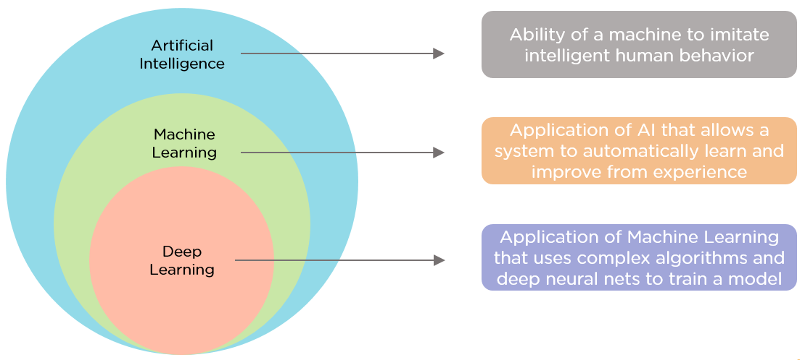

Artificial Intelligence
Artificial Intelligence (AI) is a branch of computer science that focuses on creating systems and technologies that can perform tasks that typically require human intelligence. These tasks include things like understanding natural language, recognizing patterns, making decisions, and solving complex problems.

Machine Learning
Machine Learning (ML) is a subfield of artificial intelligence (AI) that focuses on the development of algorithms and statistical models that enable computers to learn and improve their performance on specific tasks without being explicitly programmed. In essence, machine learning allows computers to learn from data and make predictions or decisions based on that learned knowledge.
Application of Machine Learning
Machine learning (ML) finds applications across industries, including healthcare for disease diagnosis and drug discovery, finance for fraud detection and trading algorithms, retail for recommendation systems and demand forecasting, NLP for translation and sentiment analysis, computer vision for image classification and object detection, manufacturing for predictive maintenance and quality control, autonomous vehicles for self-driving cars and drone navigation, energy for forecasting and climate modeling, gaming for intelligent NPCs, and human resources for resume screening and attrition prediction. ML leverages data-driven insights to automate tasks, make predictions, and optimize processes. Its versatile capabilities continue to advance, offering innovative solutions to complex problems and reshaping the way businesses and organizations operate in the modern world.